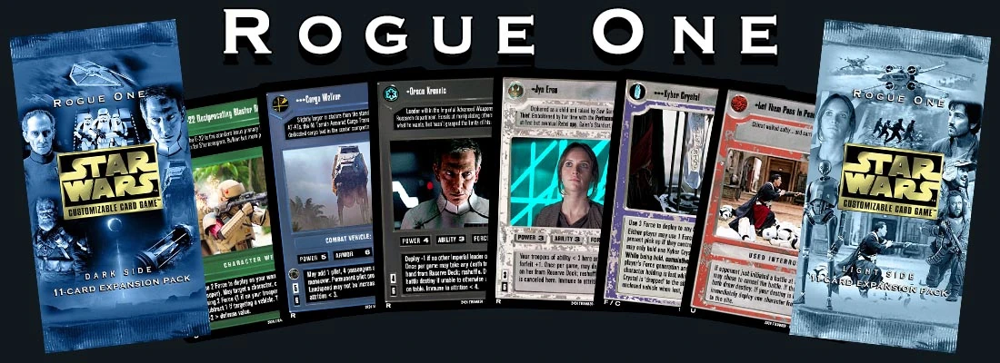

*** These cards are not for sale and are not endorsed or sponsored by Disney, Lucasfilm, Decipher, or the Star Wars CCG Players Committee in any way. These are my own custom creations, and I claim no ownership or copyright over the images from Rogue One or the gameplay mechanics of Star Wars CCG. ***
Why?
I was introduced to the Star Wars Customizable Card Game by Decipher as a child in the mid 90s when a family member gave me the Premiere Introductory Two-Player Starter Set as a birthday gift. I was instantly enamored with the cards. I spent about 6 hours studying the rulebook, reading through all the cards, and then moving the cards around on our table endeavoring to make sense of the instructions to no avail. This was the start of the most long-running and influential “hobby” of my life.
It wasn’t until several years later that I would be able to play the game correctly - but even before then the imagery, lore and gametext on each card held my attention like nothing else. Much of my youthful vocabulary was gained through my repeated study of the cards. I made my closest lifelong friends when we realized we all collected Star Wars cards. The concepts of event listeners and handlers, linear flow and interruption mechanics that this game introduced made these topics seem natural when they arose in software development.
As a child, my friends and I made dream cards by cutting bits of paper out and gluing or taping them over some sacrificial real cards. After college, my closest friends from childhood and I would gather together one weekend each winter to catch-up and play this game again. I started getting a bit more advanced with my dream-card production using photo-editing software tools and would make a handful each year to share during our reunion weekends. As the tools, resources, and digital materials I had access to allowed my results to creep ever closer to replicating the original cards' look - I started toying with the idea of making my own custom complete expansion set.
Goals and Boundaries
My goal was to create a set explicitly for the purpose of facilitating a sealed or draft play event. I came up with the following guideposts / boundaries:
-The set must be self-contained. No mechanic referenced in the gametext of a card in the set can require a card from outside the set. All of the themes and strategies introduced or implied by the cards must be feasible using only the cards in the set.
-Each of the set’s themes must be represented in a volume that is useful. If there is a theme of “x” - it must be present across enough cards, must have enough interactions to make it “feel” useful to the players. I admit I broke this guidepost a bit with K-2SO being an undercover spy - my excitement to include that mechanic got the better of me.
-The set must encourage “board action”. Meaning the set composition is heavy toward characters, starships, and vehicles. Gametext should promote battles, and the benefits and bonuses for Force drains should be done in a way to entice the opponent to try to stop you through battles instead of setting up a drain race.
-The cards must “feel” like cards from the “Endor” / “Death Star II” era. This is my personal preference for a nostalgic feeling. To me, this means several things: Gametext must not contain any shortcut symbols or abbreviations. Function density on cards cannot exceed the space available limited by writing out the full gametext like was done in that era. No upkeep costs can exist. No gametext mechanics that didn’t exist by this era can be used. I broke this rule for one card as well - "Looks Like We Found Saw's Rebels". Given the intention of the set supporting draft play, I decided that allowing the player to look before deciding if Used or Lost was worth bending this rule.
-The set must play well as a Draft event. The function, volume, and availability (in the setting of a sealed or draft event) of the cards in the set must allow for a pace of play that makes a 50-minute game time limit reasonable. Ergo, some acceleration of location deployment and some reasonable volume of cards that enable you to search your deck for other cards should exist.
With the above goals and boundaries in mind, I decided that the Jedha and Scarif locales in Rogue One could create a perfect setting. I had wild dreams of a three-expansion arc (“Rogue One”, then “Jedha”, and finally “Scarif”) like Decipher used to do - but after some initial exploration of the time and work required to make these cards, I decided a single self-contained set that created a “cube” to draft (or play sealed) from was the right format for me to pursue.
Set Composition
I used the Jabba’s Palace Sealed Deck as the inspiration to provide each player with a “Fixed” pack of cards that would enable some minimum needs for deck-construction (an objective, locations, a starting interrupt, and a handful of other cards) and then 4 “booster” packs. In working out the drafting logistics, I felt that some of the Fixed cards also needed to be available in the booster packs for the sake of drafting strategy and deck-building flexibility. An example is the dark side “***Death Trooper” character card. One copy is given to each dark side player in their Fixed pack, but it also is distributed within the booster packs as an Uncommon card. There ended up being a couple cards like this on each side.
There are 128 cards total (64 Dark and 64 Light) Each side has: -16 Fixed (of which 2 are also Uncommon and 2 are also Common) -8 Rare -16 Uncommon -28 Common
This allows an 8-player cube (4 Dark players and 4 Light players) to have the following composition: -4 Dark Side 16-card Fixed Packs -4 Light Side 16-card Fixed Packs -16 Dark Side 11-card Expansion Packs (4 per Dark player) -16 Light Side 11-card Expansion Packs (4 per Light player)
Each Expansion pack is made up of 11 cards as: -1 Rare card -3 Uncommon cards -7 Common cards
This means: -each Rare card is present 2 times in the Expansion packs -each Uncommon card is present 3 times in the Expansion packs -each Common card is present 4 times in the Expansion packs
Playtesting Lessons Learned
My friends TJ, Joe, and Patrick helped me playtest the set several times. For the first session I had created two objective cards for each side; one that focused on Jedha and control over kyber crystals, and the other focused on the battle of Scarif. During the session it became clear that - while it was nice to have the option to make a decision for yourself on which locale and strategy you wanted to pursue - the volume of content a player needed to read, consume, learn, and consider to do so was far too much for an event setting.
One of the many adjustments I made before the second playtesting session was to reduce to one objective for each side. Given the feedback from which mechanics and themes were most interesting and enjoyable for the players - I decided to keep the Dark side Jedha objective, and the Light side Scarif objective.
After the second and third playtesting sessions, I made many more subtle adjustments to costs, values, and gametext details in order to balance the two sides. I won't list off each of the changes here - but I do want to explicitly thank TJ, Joe, and Patrick for all of their help and feedback!
Downloads
Draft Event Facilitation Guide - RogueOne_Draft_Facilitation_Guide.pdf
600 dpi Full-bleed PNG files for each card - Email me and I will share this with you.
300 dpi No-bleed JPG files for each card - RogueOne_300dpi_JPG_NoBleed.zip
Player Handout - RogueOne_Player_Handout.pdf This pdf is setup so you can print on both sides (flipping the paper around between) and then cut each page in half to have a half-sheet, double-sided handout for each player.
Print Sheet with One Copy of Each Card - RogueOne_Singleton_Print_Sheet.pdf
Print Sheet with exactly what is needed to build an 8-player cube - RogueOne_8PlayerCube_Print_Sheet.pdf
Wrappers / Packs
Printable pack wrappers with cut lines (print each on half of an 8.5 x 11 sheet) -
ROFixedPackDark_300.jpg
ROFixedPackLight_300.jpg
ROExpansionPackDark_300.jpg
ROExpansionPackLight_300.jpg
The Cards
v5.01 Changelog (2024_08_30)
>Death Star
-fixed image issue where left edge would show a 1px wide line
>Fleet Supply
-fixed typo "rehuffle" to "reshuffle"
v5 Changelog (2024_08_20)
Dark Side -------------------
>Admiral Gorin
-fixed Gametext typo "Destroy" to "Destroyer"
>Carbon 1
-added space after "<" for consistency
>Carbon 3
-added space after "<" for consistency
>Cargo Walker
-Updated gametext to "4 passengers and 2 vehicles with maneuver"
>Darth Vader, Enforcer
-Changed gametext to 'lose' instead of 'use' for anti-weapon ability
>DT-220
-made death troopers lowercase in gametext for clarity
>E-11 Blaster Rifle
-updated second sentence of lore for grammar
>Eta-Class Heavy Cargo Shuttle
-removed word "of" from perm pilot ability gametext where not needed
>Jedha: Holy City Tythoni Square
-updated dark gametext from "weapon destiny draws" to "weapon destiny totals"
>Krennic With Blaster Pistol
-updated gametext to "any death trooper" for clarity
>Krennic's Personal Shuttle
-made death troopers lowercase in gametext for clarity
>Kyber Crystal - (both sides)
-updated gametext wording for clarity and to add "cumulatively"
>Orson Krennic
-updated gametext to "any death trooper" for clarity
>Scout Walker
-corrected type from AT-ACT to AT-ST
>Shortrooper Squad Leader
-fixed lore typo "Tooper" to "Trooper"
>Zeta-Class Cargo Shuttle
-capitalized and italicized "Zeta" in lore.
Light Side -----------------------
>> Updated Light Weapon card frames for better color tone for metallic parts
>Alliance Intelligence Operative
-Updated lore for grammar
>Baze Malbus
-Updated lore for grammar
>Chirrut Imwe
-updated lore for grammar
>Dip
-Updated gametext to simplify and for clarity
>Jedha: Holy City Tythoni Square
-updated light gametext from "weapon destiny draws" to "weapon destiny totals"
>Let Them Pass In Peace
-updated gametext for grammar
>Lightmake
-updated lore for grammar and italics
>Lyra Erso
-updated gametext for clarity
>Partisan Insurgent
-updated gametext
>Profundity
-removed leading "A" from lore
-updated gametext to allow holding starfighters
>Ramming Speed
-updated lore from "a disabled star destroyer" to "the disabled Persecutor"
>Scarif
-updated dark text from "ships" to "starships"
>Scarif: Citadel Tower Transmission Deck (4th Floor)
-updated gametext (both sides) for clarity
>SW-0608
-fixed spelling typo in lore (inflitrate > infiltrate)
Dark Side
Character (24)
Effect (4)
Epic Event (1)
Interrupt (6)
Kyber Crystal (1)
Location (8)
Objective (1)
Starship (11)
Vehicle (2)
Weapon (6)